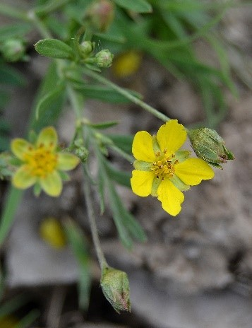
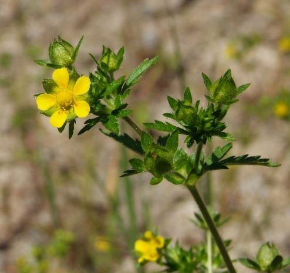

|
Дерево 2-5(10) м высотой или высокий кустарник с черно-серыми стволами и ветвями. Молодые побеги красновато-коричневые с беловато-желтыми
чечевичками. Листья 4-12 см длиной и 2-6 см шириной, от яйцевидно-ланцетных и эллиптических до обратнояйцевидных, острые,
с клиновидным или округлым основанием, кожистые, по краю железисто-остропильчатые, сверху морщинистые, матовые, темно-зеленые,
снизу сизоватые, голые или опушенные, без точечных железок. Черешки 1-2 см, с крупными железками у основания листовой пластинки или без них.
Цветки душистые, в длинных поникающих кистях 5-12 см длиной, на голых или опушенных цветоножках. Чашелистики острые или округлые,
по краю железистые. Гипантии чашевидные. Венчики белые, 1-2 см в диаметре. Плоды 5-7 мм в диаметре, шаровидные, черные, съедобные.
Косточки яйцевидные, бороздчатые. Насекомоопыляемое. Орнито- и зоохор. Размножается семенами, отводками и корневыми черенками.
Семена необходимо стратифицировать 6-7 месяца при 3-5 градусах по Цельсию. Цветет в апреле-июне, плоды созревают в июле-сентябре.
Фотограф: Татьяна Винокурова |
Кустарник или небольшое дерево до 10(15) м высотой. Кора темная, почти черная, неровная. Листья 5-8(12) см длиной, темно-зеленые,
овальные или овально-ланцетные, часто с оттянутой верхушкой, по краю мелко-пильчатые, с хрящеватыми зубчиками,
на черешке нередко пара железок. При растирании зелень с характерным горьковатым "черемуховым" запахом. Цветки белые,
до 10(12) мм в диаметре, обычно с цельнокрайними лепестками, в многоцветковых обычно поникающих кистях. Костянки шаровидные,
сначало красные, зрелые - черные, съедобные.
Фотограф: Игорь Евдокимов |
|
Кустарник до 3 м выс., с несколько раскинутыми на концах слегка поникающими ветвями, образующими густую полушаровидную крону.
Л. 3—5-лопастные, в очертании округло-эллиптические, 2—4 см дл., с более крупной и слегка вытянутой средней долей, пильчато-зубчатые,
с обеих сторон голые или почти голые, сверху зеленые, снизу более светлые. Цветки 10—12 мм в диаметре; лепестки белые или розоватые;
тычинки в числе 30, красные; пестики в числе 3—5, голые; цветоножки и чашелистики голые или покрыты рассеянными короткими волосками.
Листовки в 2 раза и более превышают длину чашелистиков, голые, на верхушке заостренные в носик, при созревании красные.
Семена грушевидные, гладкие, блестящие, до 2 мм дл. и 1 мм шир. 1 тыс. семян весит 0.9 г. Цветение в VI—VII; плодоношение в IX—X.
Фотограф: Виталий Гуменок |
Многолетнее растение высотой 15-50 см с толстым ветвистым корневищем. Гемикриптофит. Основной стебель укороченный, с розеткой листьев,
из пазух которых образует длинные, тонкие побеги, стелющиеся, укореняющиеся в узлах, опушенные. Листья продолговатые или обратнояйцевидные,
непарноперистосложные, состоящие из продолговатых или обратнояйцевидных, глубоко пильчатых, с верхней стороны голых, с нижней шелковистых,
беловойлочных, почти сидячих листочков. Прилистники нижних листьев крупные, коричневые. Цветки диаметром 1-2 см вырастают в пазухах
листьев на длинных цветоножках или одиночные верхушечные, обоеполые, правильные, 5-членные. Подчашие и чашечка 3-5-членные с заостренными
зубцами, лепестки яйцевидные, золотисто-желтые, вдвое длиннее чашечки. Цветет с мая по август. Плод — многоорешек.
Фотограф: Елена Иванова |
|
Многолетнее травянистое растение с коротким ползучим корневищем, соединяющим розетки листьев. Листья пальчатые из 5, реже 7 листочков,
сверху сизо-зелёные от густого опушения звёздчатыми волосками, снизу беловойлочные. Соцветия пазушные,
распростёртые по земле или восходящие. Цветки жёлтые, 1–1,5 см в диаметре.
Фотограф: Владимир Саенко |
Многолетнее растение высотой 20-40 см с длинным разветвленным корневищем. Гемикриптофит. Стебель восходящий или прямостоячий, прочный,
белый за счет войлочного опушения, местами покрыт длинными волосками, неветвистый, олиственный. Листья пальчатые,
состоящие из 5 узких обратноланцетных или обратнояйцевидных листочков; нижние листья черешковые, верхние сидячие, с верхней стороны голые,
блестящие, с нижней густо беловойлочные, с подвернутыми краями. Прицветники линейно-ланцетные. Цветки собраны в верхушечное
щитковидно-метельчатое соцветие, обоеполые, правильные, 5-членные, цветоножки и чашечка беловойлочные. Лепестки обратнояйцевидные,
с выемкой на верхушке, ярко-желтые. Цветет с мая по август. Плод — многоорешек.
Фотограф: Денис Карацуба |
|

Многолетнее растение 4—30 см выс.; Корневище длинное, шнуровидное; Стебли прямостоящие или восходящие, олиственные,
как и черешки листьев и цветоносы, густо отстояще волосистые; Прилистники с ланцетовидными,, цельными, реже зубчато-рассеченными концами,
зеленые, у нижних: стеблевых листьев ржаво-бурые; Листья перистые, с 3—6 парами листочков, листочки 7—15 мм дл.,
от ланцетовидных до эллиптических, обычно двулопастные, реже цельные, верхушечный листочек зачастую трехлопастной,
с обеих сторон слабо или более или менее густо прижато-волосистые, снизу с выступающей сетью жилок; Цветки некрупные, 7—12 мм в диам.,
в многоцветковых, почти щитковидных соцветиях; Лепестки желтые, обратно-округло-яйце-видные, на верхушке цельные,
в 1,5 раза превышают длину чашелистиков.
Фотограф: Леонид Непоменко |
Многолетнее травянистое растение семейства розоцветных. Корневище толстое, многоглавое, горизонтальное, цилиндрическое или
клубневидное длиной 2-7 см и шириной 1-3 см, деревянистое, красновато-бурое, с многочисленными тонкими корнями.Стебли прямостоячие
(один или несколько) или приподнимающиеся, вильчато-ветвистые, тонкие, стройные, высотой до 30 см, покрыты короткими волосками.
Стеблевые листья сидячие, тройчатосложные, с крупными глубоко надрезанными прилистниками; листочки обычно сидячие,
продолговато-клиновидные, крупнопильчатые, с обеих сторон прижато-волосистые, реже - почти голые. Прикорневые листья трех-,
пятипальчатосложные, длинночереш-ковые, собраны пучком, с двумя крупными прилистниками, которые ко времени цветения отмирают.
Цветки одиночные, на длинных цветоножках, диаметром около 10 мм. Чашечка волосистая, двойная, из 4 листочков подчашия и 4 чашелистиков,
остающихся при плодах. Венчик четырехлепестный. Лепестки желтые, обратнояйцевидные. Тычинок 15-20 и более, пестиков,
сидящих на выпуклом волосистом цветоложе, много. От других видов лапчатки отличается четырьмя желтыми лепестками в цветке
(у лапчатки других видов - 5 лепестков). Плод - многоорешек. Цветет с середины мая до сентября. Плоды созревают в августе-сентябре.
Фотограф: Евгений Давкаев |
|
Цветки некрупные, гемно-желтые, с 5 лепестками, на длинных цветоножках, образуют рыхлое многоцветковое соцветие в верхней части стебля;
время цветения: с июня по август; листья: прикорневые и нижние стеблевые листья на длинных черешках, состоят из 7 (реже 5) продолговатых
зубчатых листочков тёмно-зелёной окраски, опушённых снизу), листья расположены поочерёдно на восходящих стеблях,
стебли и черешки листьев опушены оттопыренными волосками; высота растения: 20-50 см.
Фотограф: Андрей Белехов |
Многолетнее травянистое растение с утолщённым коротким корневищем. Стебли восходящие или лежачие, 5—20 см высотой, почти не
превышающие или немного превышающие прикорневые листья, ветвистые от нижней трети или с середины, многоцветковые.
Стебли и черешки листьев покрыты длинными оттопыренными волосками, обычно с примесью мелких жёлтых желёзок.
Прикорневые листья длинночерешковые, пальчатые, с 5—7 листочками, с обеих сторон зелёные, волосистые, нередко железистые;
прилистники их с ланцетными, острыми ушками. Стеблевые листья короткочерешковые, трёх- или пятилопастные; самые верхние — простые;
прилистники крупные, яйцевидные, островатые, цельнокрайние или с 1—2 зубцами. Листочки прикорневых листьев зелёные, опушённые, сидячие;
2 внешних — значительно мельче, чем другие, с немногими зубцами; более крупные листочки продолговато-клиновидные, 1—5 см длиной,
0,4—1,5 см шириной, со многими обычно короткими и тупыми зубчиками.
Цветки обычно 8—12 мм в диаметре, на тонких коротковатых цветоножках, золотисто-жёлтые, в щитковидно-метельчатом соцветии.
Чашечка немного или до 1,5 раза короче венчика, волосистая, негусто мелкожелезистая. Семянки удлинённо-яйцевидные, гладкие.
Фотограф: Мария Жукова |
|
Многолетнее растение 20—50 см выс.; Корневище утолщенное, многоглавое; Стебли прямостоящие, тонковойлочные;
Прилистники прикорневых листьев бурые, ланцетные, стеблевые зеленые, обычно глубоко лопастные; Прикорневые и нижние стеблевые листья
пятерные, реже семерные, на длинпых, войлочно-опушенных, черешках, верхние коротко черешковые, листочки продолговато-обратно-яйцевидные,
по краям глубоко, неравномерно, надрезанно-зубчатые, сверху серовато-волосистые, лишь осенью зеленые, снизу беловойлочные;
Цветки около 15 мм в диам., в многоцветковых соцветиях; Чашечка густо бело- или серовойлочно волосистая, наружные чашелистики эллиптические,
уже яйцевидных внутренних.
Фотограф: Дмитрий Куряев |
Многолетнее, реже двулетнее травянистое растение с утолщённым каудексом. Стебли приподнимающиеся, до 20—50 см высотой,
в верхней половине ветвящиеся, густо облиственные, крепкие. К цветению сохраняется развитая прикорневая розетка листьев.
Железистое и войлочное опушения отсутствуют, имеются только мягкие длинные и короткие простые волоски. Листья пильчато-сложные,
пятерные (верхние стеблевые — тройчатые), с сидячими листочками, по всему краю с обычно неравными тупыми или островатыми зубцами,
покрыты густым мягким опушением с обеих сторон. Цветки многочисленные, в густом щитковидном соцветии. Лепестки бледно-жёлтого цвета,
в числе пяти, округлой или обратнояйцевидной формы, на верхушке обычно с неглубокой выемкой, равны чашелистикам по длине или превышают их.
Тычинок около 20.
Фотограф: Марина Ворошилова |
|
Многолетнее травянистое растение. Побеги опушённые. Листья простые рассечённые, округлые, с зубчатым краем, размещены очерёдно.
Цветки жёлтые, пятилепестковые, размером 1—2 см, собраны в метельчатое или щитковидное соцветие. Плод — многоорешек зелёного или
бурого цвета.
Фотограф: Виктор Шмонин |

Корень простой, волокнистый.
Стебли 15—50 см высотой, одиночные или по нескольку, обычно прямостоящие, многолистные, кверху вильчато-ветвящиеся,
покрытые оттопыренными жёсткими волосками. Листья обычно тройчатые, изредка нижние пятерные или благодаря рассечённому конечному
листочку перистые, пятерные или семерные; прилистники широкояйцевидные, реже ланцетные, острые, цельнокрайные, реже снаружи крупнозубчатые.
Листочки из клиновидного основания обратнояйцевидные или продолговатые, крупно и неравномерно пильчатые, с обеих сторон
жестковато-оттопыренно-волосистые. Цветки многочисленные, несколько скученные; цветоножки по отцветании прямостоящие; чашечка волосистая,
по отцветании разрастающаяся; чашелистики вначале равновеликие, продолговато-ланцетные, острые, по отцветании наружные длиннее и
шире внутренних, листовидные, часто рассечённые; лепестки мелкие, обратнояйцевидные, равны или короче чашелистиков. Столбик почти
верхушечный, сильно утолщённый при основании, равен по длине зрелой семянке или короче её. Цветёт в июне — сентябре. Плоды — многочисленные,
мелкие, яйцевидные, мелкоморщинистые семянки.
Фотограф: Марина Ворошилова |
|
Многолетник. Мощное, многоглавое крщ., одетое остатками прлст., несет толстые прямостоящие, прямые, хорошо облиственные,
в верхней части дихотомически ветвящиеся ст., выс. 30—70 см, густо одетые, так же как и чрш., цвн. и чшч., короткими щетинками и
длинными оттопыренными волосками, сидящими на бугорках, по б. ч. с примесью членистых железистых волосков; корневые и нижние стеблевые
л. крупные, длинно-черешчатые, 5—7-рные, верхние стеблевые пятерные и тройчатые, коротко-черешчатые и сидячие; прлст. стеблевых
л. яйцевидно-ланцетные, цельнокрайние или надрезанно-зубчатые; листочки продолговато обратно-яйцевидные или продолговатые,
у основания клиновидно-суженные ж цельнокрайние, в остальной части равномерно крупно или надрезанно-зубчатые, с 7—17 яйцевидными или
ланцетными тупыми или острыми зубцами с каждой стороны, с обеих сторон зеленые, жестко-волосистые, снизу морщинистые от выступающих
боковых жилок второго и третьего порядка. Цв. в многоцветковом сцв., крупные, до 2.5 см в диам.; чшч. густо мохнато-волосистая,
при пл. с выдающимися жилками; наружные чшл. почти линейные, одной дл. с более широкими яйцевидно-ланцетными внутренними или едва
длиннее их (реже несколько короче), и те, и другие острые; лп. обратно-яйцевидные, глубоко-выемчатые, равны или гораздо длиннее чшл.,
разных оттенков желтого цвета; тыч. 25—30, нити тыч. не длинные, плн. продолговатые; цвтл. выдающееся, несколько мясистое;
семянки многочисленные, небольшие, яйцевидные, морщинистые, крыловидно-килеватые, бурые; стлб. короче зрелой семянки,
при основании несколько утолщенный. VI—VII.
Фотограф: Илья Михеев |
Однолетнее или двулетнее, реже многолетнее растение 10—50 см выс.; Корень тонкий; Стебли одиночные или в числе нескольких,
прямостоящие или приподнимающиеся, от основания с боковыми веточками, слабо полуприжато-волосистые; Листья перистые,
прикорневые и листья нижних веточек длинно черешковые, листья верхних веточек почти сидячие, черешки оттопыренно-волосистые,
в основании с зубчато-лопастными прилистниками, листовые пластинки перистые, 3—5-парные, самые верхние мелкие, иногда тройчатые,
листочки продолговатые, верхние пары обычно низбегающие на листовую ось, остро пильчато-зубчатые, с обеих сторон слабо
полуоттопыренно-волосистые, зеленые; Лепестки желтые, обратно-яйцевидные.
Фотограф: Валерий Куделя |